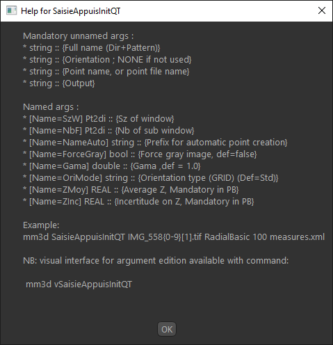
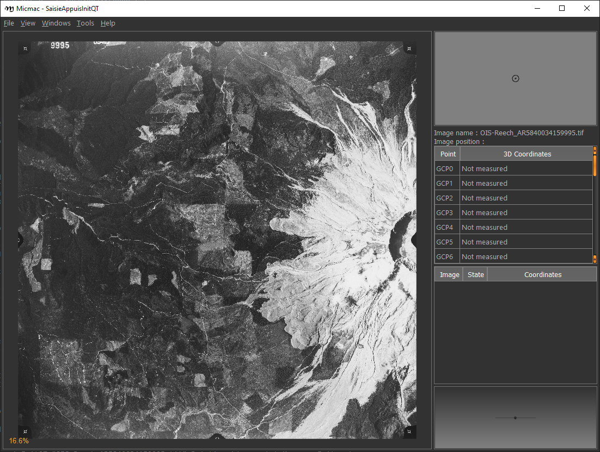
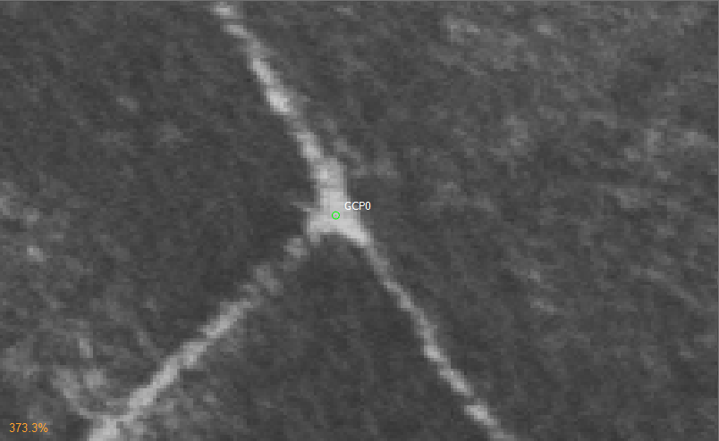
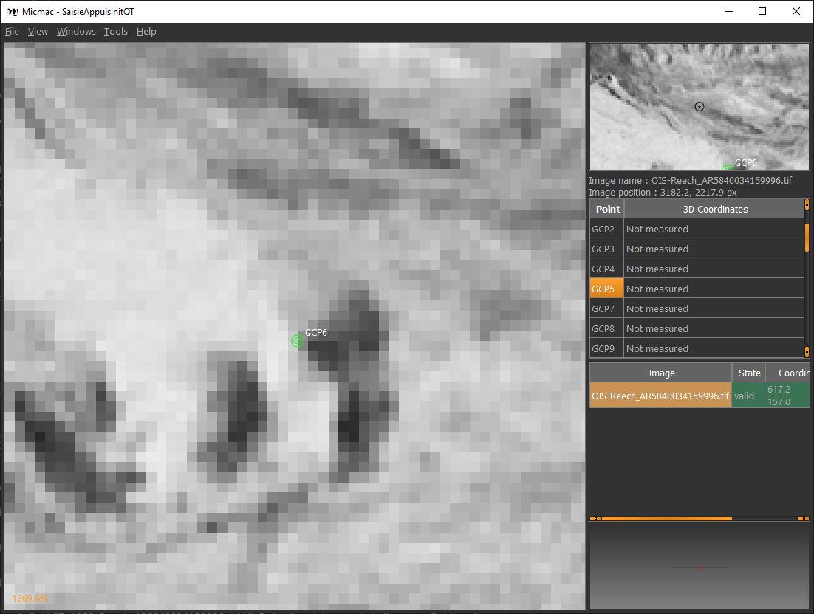
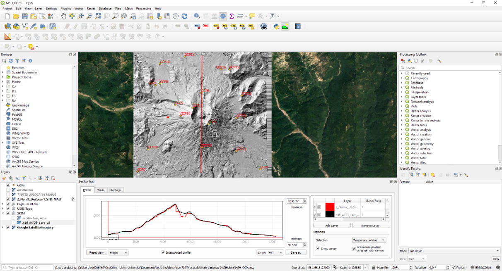

week 1 - dem processing using micmac
introduction
Be sure to download all the data from the Practical 1 area on Blackboard before starting, or from the google drive link, then extract the zip file. You should have the following files/folders available:
├─ AR5840034159994.tif
├─ AR5840034159995.tif
├─ AR5840034159996.tif
├─ AR5840034159997.tif
├─ AR5840034159998.tif
├─ AR5840034159999.tif
├─ filtre.tif
├─ id_fiducial.txt
├─ id_gcps.txt
├─ GCPs.txt
├─ MicMac-LocalChantierDescripteur.xml
├─ NAIP_Images/
└─ Ori-InterneScan/
└─ MeasuresCamera.xml
In this practical, we’re going to work on processing a digital elevation model (DEM) and orthophotos using a collection of aerial photos acquired in 1984 over Mt St Helens, a volcano in Washington state, USA. During the 1980s and early 1990s, the volcano erupted several times, including an eruption in May 1980 that collapsed the entire north face of the mountain.
Note
The instructions/images below assume that you are using MicMac in a Windows environment; the commands will be the same for a MacOS/Linux environment, but you’ll need to open a terminal rather than the Windows command prompt.
getting started
To get started, open the Windows command prompt, either by using the search bar, or Start > Windows System > Command Prompt.
To change folders from the command line, you will use the cd command. When you open the command prompt, you should be in your home folder (for me, this is C:\Users\bob). At the command prompt, navigate to the folder where you have saved the data above (for me, this is C:\Data\MtStHelens) by typing cd followed by the directory name (note the space between the command and the directory):
C:\Users\bob>cd "C:\Data\MtStHelens\"
Note
In the line above, C:\Users\bob is the current directory, and > is the command prompt - if you want to copy/paste the above command, be sure to copy the text after the > (i.e., cd C:\Data\MtStHelens).
For the remaining commands, I will omit the command prompt and only write the command that you will need to use.
Note
If you have saved your data to another drive (e.g., D:), you will first need to change to the correct drive, before you try to change directories. So, if your data are saved to D:\EGM702\Data, you will need to first change drives by entering just the drive name followed by a colon:
> D:
> cd EGM702\Data
in order to change to the correct directory. Note that you’ll need to do this each time you open the command prompt - the default starting disk is C:.
To see the contents of the directory, use the dir command. You should see something similar to the picture below:

We’re going to run each of the processing steps in MicMac using the command line interface. If you are curious about what a particular command or input parameter does, you can always type -help after the command, and information about how to use the command will be printed to the screen. For example, for the first command we will use, you can type the following at the command prompt:
mm3d SaisieAppuisInitQt -help
This will open the following window:
{kind=link}
Note
In a MacOS/linux environment, the help message may just display to the terminal window, rather than opening a popup window.
The help text shows you the arguments that you have to use to run the command, as well as optional named arguments and their meanings. For other commands, such as Malt, the text will print directly to the command window.
resampling the images
The first thing we have to do is make sure the images are re-sampled to a consistent geometry. To do this in MicMac, we use the SaisieAppuisInitQT command. We’ll start with the first image, AR5840034159994.tif. To begin, type the following (or copy & paste) at the command prompt (note the lack of space in MeasuresIm-AR5840034159994.tif.xml). You may also have to re-type the quotation marks, as the command prompt may not recognize them:
mm3d SaisieAppuisInitQT "AR5840034159994.tif" NONE id_fiducial.txt MeasuresIm-AR5840034159994.tif.xml
This will open the window shown below:

You’ll need to set the locations of each of the fiducial marks in the image (there are 8 in total). They are numbered as you can see in the image above, with P1 located in the lower left corner of the image. You can pan around the viewer by pressing the centre wheel on your mouse, or zoom in/out using the scroll wheel on your mouse. Zoom in on the P1 mark, then click on P1 in the table on the right side of the frame, and finally click on the dot in the centre of the fiducial mark:

You want to get as close to the middle of the dot as possible. You might notice that this isn’t easy for P6, which is partly obscured - just do the best that you can. When you’re satisfied you have the right point, continue for the remainder of the points, then select File > Exit.
To input the points for the next image (AR5840034159995.tif), you’ll need to change both the input filename and the output filename in the command:
mm3d SaisieAppuisInitQT "AR5840034159995.tif" NONE id_fiducial.txt MeasuresIm-AR5840034159995.tif.xml
Once that’s done, repeat this for the remaining images in the directory. You’ll notice that micmac has created two MeasuresIm files for each image, one with an extension -S2D.xml, and the other with an extension -S3D.xml. You’ll need to move each of the S2D.xml files:
MeasuresIm-AR5840034159994.tif-S2D.xml
MeasuresIm-AR5840034159995.tif-S2D.xml
MeasuresIm-AR5840034159996.tif-S2D.xml
MeasuresIm-AR5840034159997.tif-S2D.xml
MeasuresIm-AR5840034159998.tif-S2D.xml
MeasuresIm-AR5840034159999.tif-S2D.xml
into the Ori-InterneScan directory, being sure to remove the -S2D from each name. Ori-InterneScan/ should now look like this:

At this point, you can delete the S3D files – the program creates them, but we don’t actually need them. Next up, re-sample the images using the fiducial marks you have identified, so that each image has the same geometry:
mm3d ReSampFid "AR.*tif" 0.05
This will re-sample each of the images to a resolution of 50 microns (i.e., 1 pixel = 0.05 mm). If you’re worried about space, you can re-sample to 100 microns if need be (change 0.05 to 0.1 in the command above). Note that this will lower the final resolution of your DEM and orthophoto, though, from about 4 metres to 8 metres.
If the command runs correctly, you should see the names of each image printed out, along with the residuals (in # of pixels) and the amount of time it took to re-sample each image.
As long as the residuals are small (<2 pixels or so), you can continue. If not, you’ll need to adjust your fiducial mark selection, and run ReSampFid again. When you have successfully re-sampled the images, create a new directory called OrigImg and move the original image files into it:
mkdir OrigImg
move AR*.tif OrigImg
Note that the wildcard, or asterisk (*), symbol tells the computer to move anything that matches the pattern AR(something).tif into the directory OrigImg – so it should move all of the scanned images.
computing the relative orientation
The next step is to find tie points to help compute the relative orientation of the images. First, run Tapioca:
mm3d Tapioca MulScale "OIS.*tif" 400 1200
This will compute tie points at two resolutions to help speed things up. Once this completes, you can filter the tie points, to make sure that they don’t include things like the fiducial marks or any writing on the image frame:
mm3d HomolFilterMasq "OIS.*tif" GlobalMasq=filtre.tif
If the provided filtre.tif doesn’t work, you can watch the video here to make your own.
After this, you can compute the relative orientation using Tapas:
mm3d Tapas RadialBasic "OIS.*tif" Out=Relative SH=HomolMasqFiltered LibFoc=0
For these images, the estimated focal length is 302.26 mm, based on the value recorded by the camera at the time of acquisition. At this stage, we will keep the focal length fixed (LibFoc=0) to this value (which is stored in MicMac-LocalChantierDescripteur.xml). This will calibrate the relative orientation using a basic radial distortion camera model (RadialBasic). If you continue to use MicMac for your own projects, you might need to change the camera model used – you can check out the MicMac Wiki to see the other camera models available.
Now, let’s visualize the relative orientation using AperiCloud and MeshLab (or CloudCompare). First, run this command:
mm3d AperiCloud "OIS.*tif" Relative SH=HomolMasqFiltered
When this completes, you should have a file called AperiCloud_Relative_MasqFiltered.ply in your directory. Open either MeshLab or CloudCompare, and then open this file. You should see something like this:

Each of the cameras is shown as a green and red box, and the tie points are displayed as black and white pixels. As long as you can see six cameras and the basic shape of a volcano, you can close MeshLab or CloudCompare.
Note
If you encounter errors along the way, you can e-mail me, or try searching google for potential resolutions. Be warned that a number of the results, as well as the error messages, may be in French. There is also a forum and a subreddit where you can ask the developers and other users for help - most people are quite helpful and happy to help.
computing the absolute orientation
At this point, we’re ready to compute the absolute orientation of the images - taking them from the relative geometry to the real world.
To do this, we need to find a number of Ground Control Points (GCPs), which will help the software solve the absolute orientation of the cameras, and compute the 3-dimensional location for each pixel in the images.
To help save some time, and because finding GCPs in 30+ year old aerial photos can be difficult, I’ve provided a number of GCPs that you should be able to find in the images. In your folder, you should have a file, GCPs.txt, which contains the name and x, y, and z location for the GCPs. To make the file usable by MicMac, you need to convert it:
mm3d GCPConvert AppInFile GCPs.txt
This will create a file, GCPs.xml, which MicMac will read to do the calibration. Before we can do that, though, we have to find the image locations for each of the GCPs. GCPs.txt has 33 different points, picked from US Dept of Agriculture National Agriculture Imagery Program (NAIP) orthophotos, which are provided in the directory NAIP_Images. Rather than trying to find each point individually, we can first use MicMac to estimate where each of the points should be. First, run the following command:
mm3d SaisieAppuisInitQT "OIS-Reech_AR5840034159995.tif" Relative id_gcps.txt MeasuresInit.xml
This will open the window shown below:
{kind=link}
You might also want to see what the GCPs actually look like on the ground. To do this, you can load the NAIP Imagery into either QGIS or ArcGIS. You can add the images individually, or you can add them all at once using the Virtual Raster (mtsthelens.vrt), which should work for either software.
To display GCPs.txt in QGIS, you can add them as a Delimited Text Layer. Choose Custom Delimiter under File Format, and set the delimiter to Space. Under Record and Fields Options, set the Number of header lines to discard as 2, and uncheck First record has field names. Set field_2 to be the X field, and field_3 to be the Y field. Finally, set the Geometry CRS to be EPSG:32610 – WGS84/UTM zone 10N, as shown below, then click Add:
{kind=link}
This will load the points into the map. You can also display the names of the points (field_1 in the example above) as labels, so that you know which point is which on the map.
Note
To load the points in ArcMap or ArcGIS Pro, you might first need to replace the spaces in the text file with commas.
We’ll start by inputting GCP0. This GCP is the junction of two forest roads to the southwest of the mountain (but in the upper left of image 9996, in the far upper left of image 9997, and in the upper center of image 9995). Open image 9995:
mm3d SaisieAppuisInitQT "OIS-Reech_AR5840034159995.tif" Relative id_gcps.txt MeasuresInit.xml
then zoom in toward the upper middle of the image 9995. The junction should look like this:
{kind=link}
As with the fiducial marks, click the point name in the table on the right (GCP0), then click on its location in the image. Close the window (File > Exit). Next, open image 9996:
mm3d SaisieAppuisInitQT "OIS-Reech_AR5840034159996.tif" Relative id_gcps.txt MeasuresInit.xml
You should see that the point GCP0 is now displayed in 9996, but it’s not quite in the correct location, and it’s yellow rather than green. Zoom in on the marker, then hold down the CTRL button and click and drag the marker to the correct location. When you’re satisfied with its location, right-click and select Validate – it should turn green.
To start with, we’ll only put in a few of the GCPs. I recommend doing GCP6 next – you should be able to find it in images 9996, 9997, and 9998. It should look something like this:
{kind=link}
Close the window, and open up image 9997. Here, you should be able to find both GPC0 and GCP6, as well as GCP13 in the lower right corner of the image:

Continue on to images 9998 and 9999. Once you have put in these GCPs (GCP0, GCP6 and GCP13), you can run the GCPBascule command to make a rough estimate of where the remaining GCPs should fall in each of the images:
mm3d GCPBascule "OIS.*tif" Relative TerrainInit GCPs.xml MeasuresInit-S2D.xml
This will compute a rough transformation between the relative geometry and the real-world coordinates. You should see something like this in the Command Prompt window:

As long as your errors aren’t large (<2 pixels or so), you can move on. If you have large errors, you’ll need to carefully check the locations of your GCPs. If you scroll up in the Command Prompt window, you should see a report for each of the GCPs you have input, including which image has the largest error (ErrMax). You can use this information to decide which image and which GCP needs to be fixed, either by moving it or by deleting the GCP from the image.
The next step is to run SaisieAppuisPredicQT:
mm3d SaisieAppuisPredicQT "OIS-Reech_AR584003415999[4-7].tif" TerrainInit GCPs.xml MeasuresFinales.xml
This will place markers at their approximate locations in the images, making it easier to find the control points in the image. Note that the parameter "OIS-Reech_AR584003415999[4-7].tif" will open 4 images (9994, 9995, 9996, and 9997), which can be memory-intensive. If need be, you can proceed one image at a time, or by only opening 2 images (e.g., replace "OIS-Reech_AR584003415999[4-7].tif" with "OIS-Reech_AR584003415999[4-5].tif" to only open images 9994 and 9995). The window should now look something like this (note that the image order may be different – if you look just above the table on the right-hand side, you can see which image is which by hovering over them):
{kind=link}
From here, locate and validate as many of the points as you can – it’s not strictly necessary to do all of them, but it can help to improve the final results. I recommend trying to do at least a few of the ones at higher elevations, for reasons that should be clear from the lectures. Remember to check the orthoimages provided to be sure you’re finding the right points – don’t just accept the estimated locations. Once you’ve accepted points from the first four images (9994-9997), you’ll need to exit Saisie (File > Exit), and re-run the command to input points to the remaining images:
mm3d SaisieAppuisPredicQT "OIS-Reech_AR584003415999[6-9].tif" TerrainInit GCPs.xml MeasuresFinales.xml
bundle adjustment
Once you’ve input enough GCPs (at least 10), you can run GCPBascule again, which will refine the transformation estimated in the previous steps:
mm3d GCPBascule "OIS.*tif" TerrainInit TerrainBrut GCPs.xml MeasuresFinales-S2D.xml
The next step is to run Campari, which will perform the bundle adjustment and refine the camera calibration even further:
mm3d Campari "OIS.*tif" TerrainBrut TerrainFinal GCP=[GCPs.xml,5,MeasuresFinales-S2D.xml,2] SH=HomolMasqFiltered AllFree=1
The numerical values in the GCP option (5 and 2 in GCP=[GCPs.xml,5,MeasuresFinales-S2D.xml,2]) are the estimate of the GCP accuracy in world coordinates (first number) and in pixels (second number). For now, I recommend keeping them at these default values, but feel free to experiment after you’ve gotten the hang of it somewhat.
You should notice that the output for Campari tells you which control point has the greatest error (in pixels), and for which image. If your errors are large, this can be a hint as to which GCPs you should try to re-position (running SaisiePredicQT again, followed by GCPBascule and Campari) before moving on to the next steps.
dem extraction and orthophoto generation
The next step is to extract the DEM and create the orthophoto mosaic. First, run Malt to do the DEM extraction and create the individual orthophotos:
mm3d Malt Ortho "OIS.*tif" TerrainFinal MasqImGlob=filtre.tif NbVI=2 ZoomF=1 DefCor=0 CostTrans=4 EZA=1
This will create two folders, MEC-Malt and Ortho-MEC-Malt. In MEC-Malt, you will find the DEM (Z_Num9_DeZoom1_STD-Malt.tif), as well as the correlation image (Correl_STD-MALT_Num_8.tif) and the image mask (AutoMask_STD-MALT_Num_8.tif). This will also take some time, depending on your computer – on my laptop, it takes around 10-15 minutes for this set of images.
At the end, you can load the final DEM (Z_Num9_DeZoom1-STD-MALT.tif) into QGIS or ArcGIS. The image below shows a comparison between my results (hillshade, red profile line) and the Shuttle Radar Topography Mission (SRTM) DEM (black line):
{kind=link}
In Ortho-MEC-Malt, you will find an orthorectified version of each of the input images (e.g., Ort_OIS-Reech…). To create an orthophoto mosaic, you can run the following command:
mm3d Tawny Ortho-MEC-Malt Out=Orthophotomosaic.tif
This will create a mosaicked version of the images, which you can open using QGIS or ArcGIS.
cleaning up the outputs
The final step (for now) is to clean up the output DEM and Orthophoto, masking out the parts of the DEM raster that aren’t covered by the images.
First, cd into MEC-Malt:
cd MEC-Malt
Now, copy the .tfw file for the DEM to Correl_STD-MALT_Num_8.tfw and AutoMask_STD-MALT_Num_8.tfw:
copy Z_Num9_DeZoom1_STD-MALT.tfw Correl_STD-MALT_Num_8.tfw
copy Z_Num9_DeZoom1_STD-MALT.tfw AutoMask_STD-MALT_Num_8.tfw
This will create a worldfile for both the correlation mask and the AutoMask, enabling you to load them into QGIS or ArcGIS. If you haven’t already, open QGIS (or ArcGIS), and add these three raster files to the map.
Open the Raster Calculator. If you are using ArcGIS, skip to the next line below. If you are using QGIS, enter the following expression:
"Z_Num9_DeZoom1_STD-Malt@1" * ("AutoMask_STD-Malt_Num_8@1" > 0)

This will mask the parts of the DEM that aren’t valid (i.e., MicMac wasn’t able to resolve an elevation for them).
If you are using ArcGIS, enter the following expression into the Raster Calculator:
SetNull("AutoMask_STD-MALT_Num_8.tif" == 0, "Z_Num9_DeZoom1_STD-MALT.tif")
{kind=link}
Save the masked DEM to your directory as MtStHelens_DEM.tif (or similar).
At this point, you’re done – we’ll work a bit more on analyzing our DEMs in the week 2 practical.